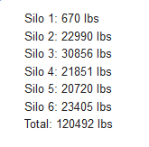

Sensor_Email
CLICK ME: View project files
Object: Take Node-Red script and convert it into a PowerShell script.
Short Description: A previous person in my position wrote a script in Node-Red that takes sensor data from silos and converts it to show how many pounds of goods are in the silos. It takes this data and emails it to anyone in charge of buying the goods. This way they know how many more pounds they need to buy to fill the silos back up. In order to convert this to PowerShell I needed to understand Node-Red. I also had to understand PowerShell and its capabilites. Read more about how I acomplished this in the "CLICK ME" link.